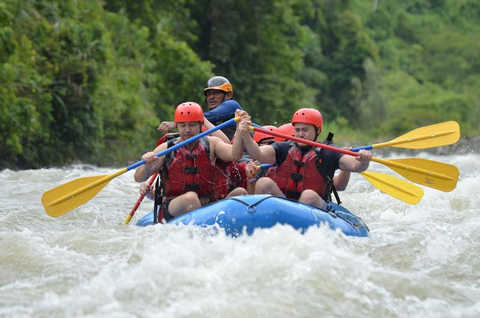
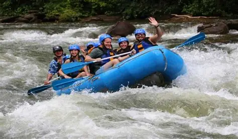
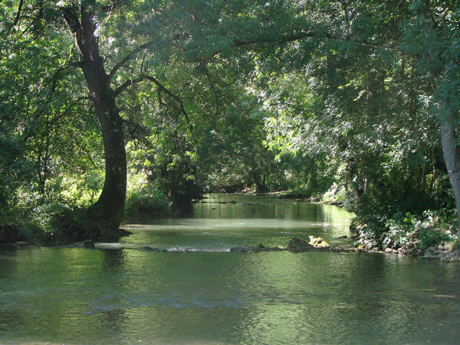
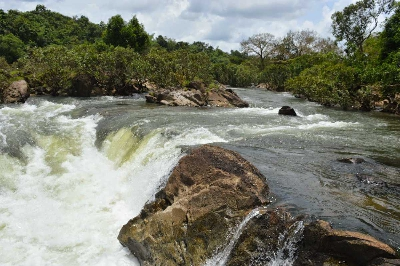
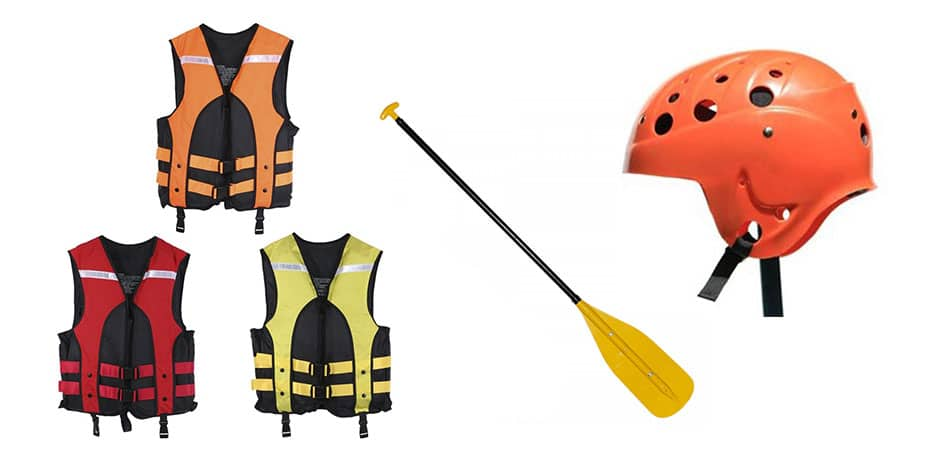

A aventura que marca para sempre!




Para praticar rafting, você precisará dos seguintes equipamentos: Bote inflável: É essencial para a estabilidade e segurança durante a descida. As boias são feitas de material resistente e possuem um sistema auto-esgotável. Remos: São leves e feitos de plástico resistente, permitindo que os tripulantes conduzam o bote de forma eficaz. Saco estanque: Impermeável, é utilizado para transportar itens como kit de primeiros socorros, máquinas fotográficas e lanches. Botinha de neoprene: Ajuda a aquecer os pés durante a atividade. Capacetes: Proteção contra choques durante a descida. Esses equipamentos são fundamentais para garantir uma experiência segura e confortável no rafting.